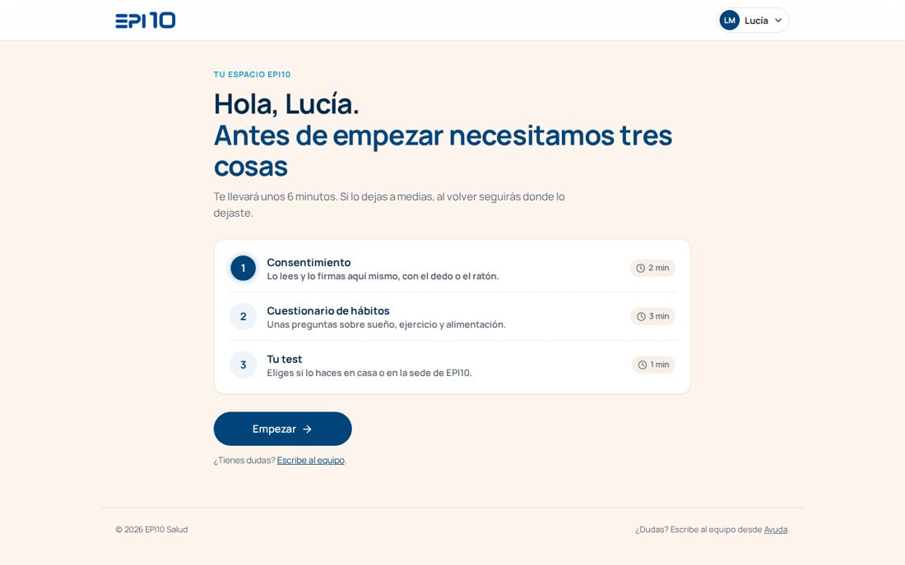
Bienvenida
Los tres pasos que tiene por delante y cuánto tarda cada uno.
IgualEl recorrido de compra, consentimiento, cuestionario, kit, mensajes, citas y documentos es el de la v0.1, ya construido sobre OpenEMR. Son capturas reales de esa versión. En la v0.2 solo cambian los detalles anotados en cada una.
Stripe, orquestador y Odoo. Sin cambios.
Consentimiento, cuestionario y «Tu test». Cambio menor: el cuestionario llega medio relleno desde el chatbot.
Iguales. En la navegación nueva, Mensajes queda en la barra y Citas y Documentos en el menú.

Los tres pasos que tiene por delante y cuánto tarda cada uno.
Igual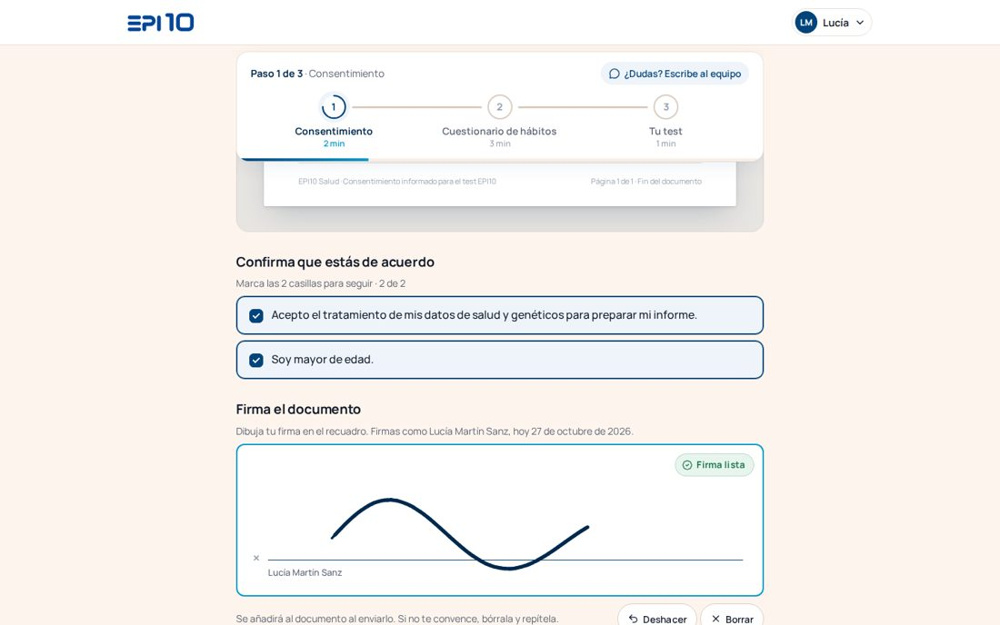
Firmado en pantalla. El de investigación va aparte y es opcional.
Igual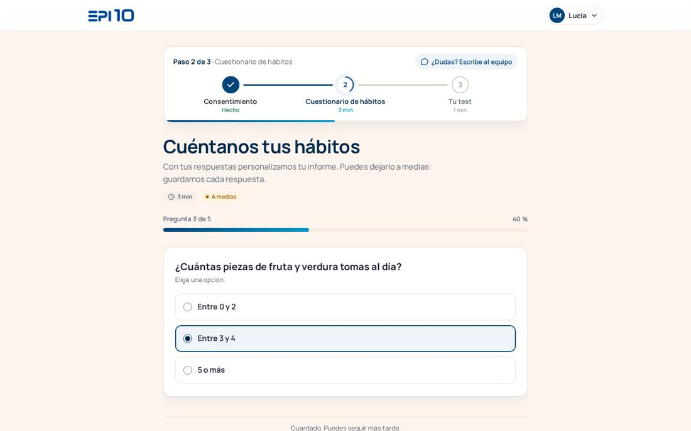
Pregunta a pregunta. En v0.2 llega con las respuestas del chatbot ya puestas.
Cambio menor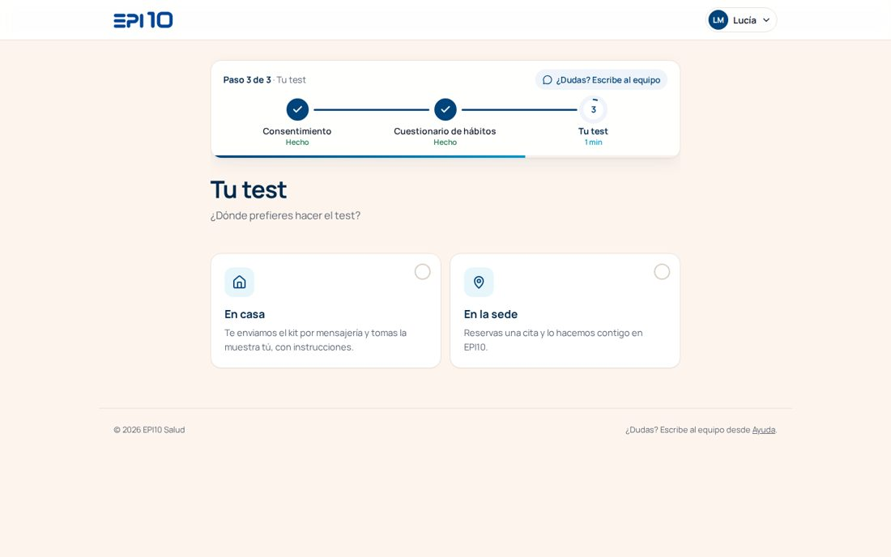
En casa o en la sede. Con Eurofins, más adelante, el laboratorio más cercano.
Igual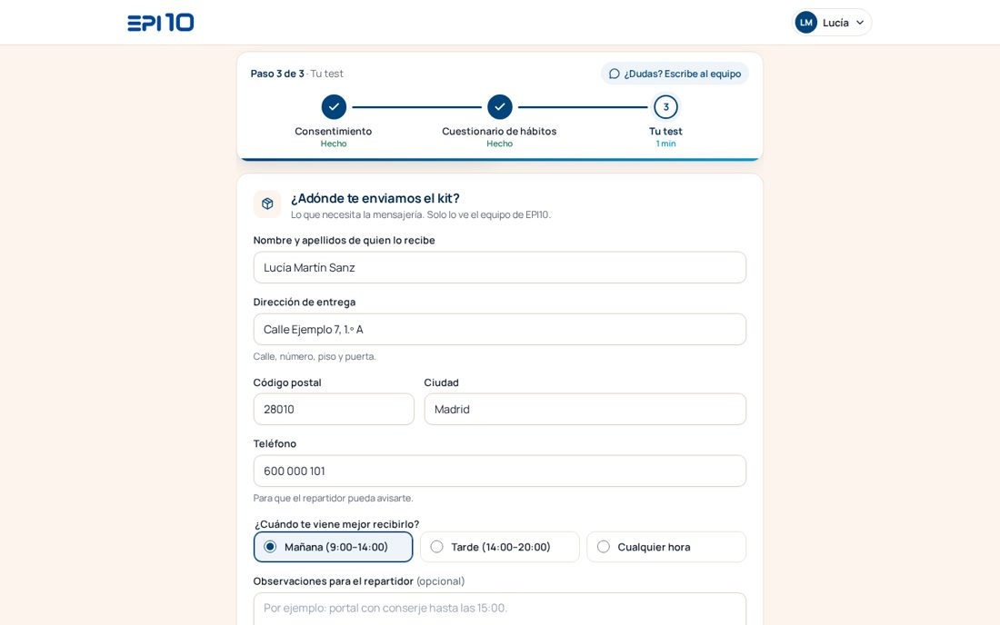
Dirección y franja. La misma dirección sirve luego para los pedidos de fórmulas.
Igual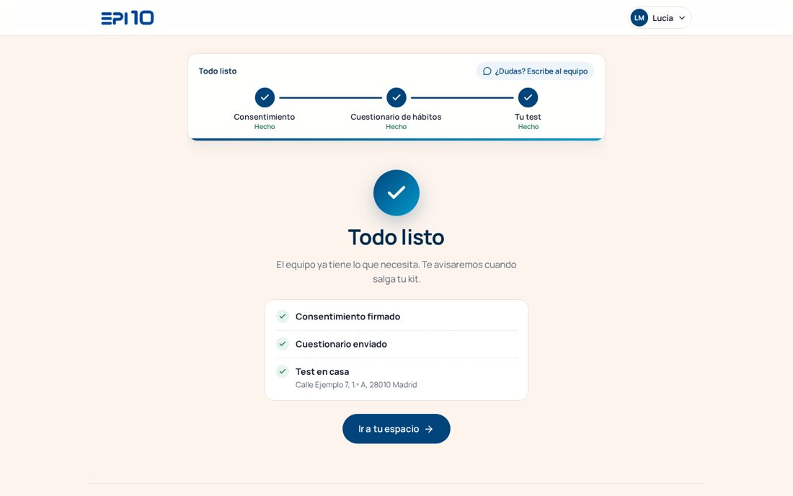
Confirmación. Después, la espera con hábitos (nuevo).
Igual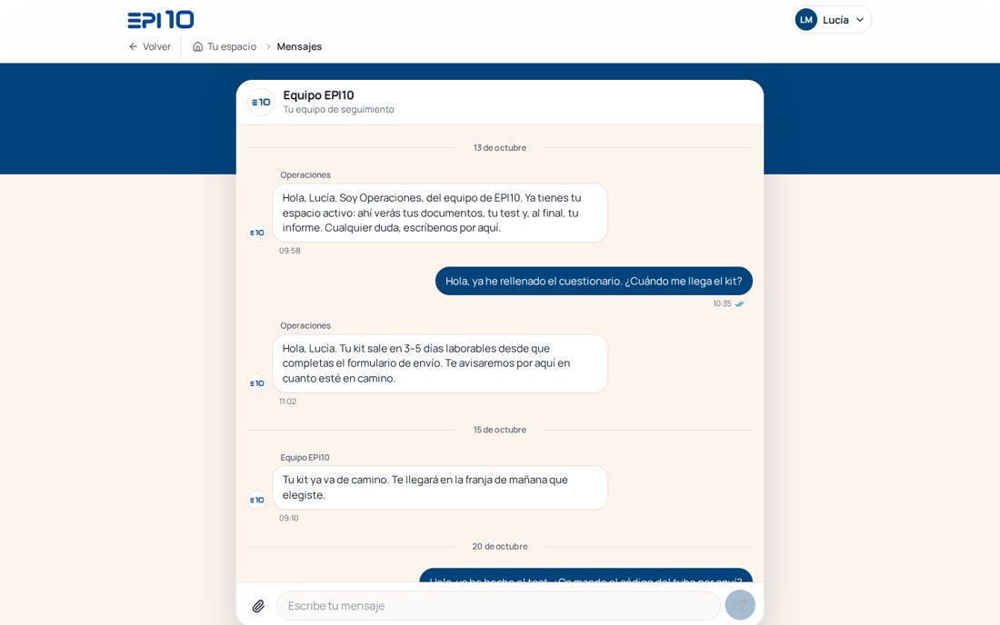
Chat con el equipo. Las alertas de la revisión llegan aquí como mensaje del profesional.
Igual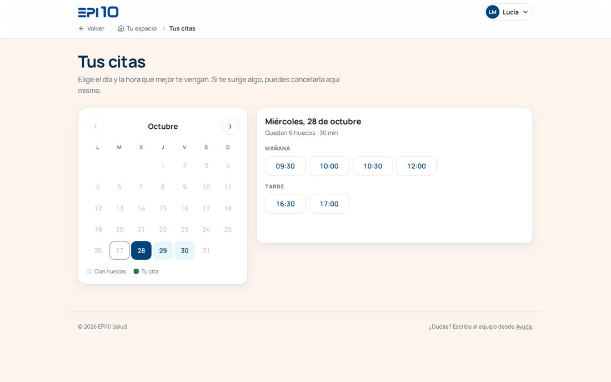
Sirve para la sesión del informe y la revisión a seis meses.
Igual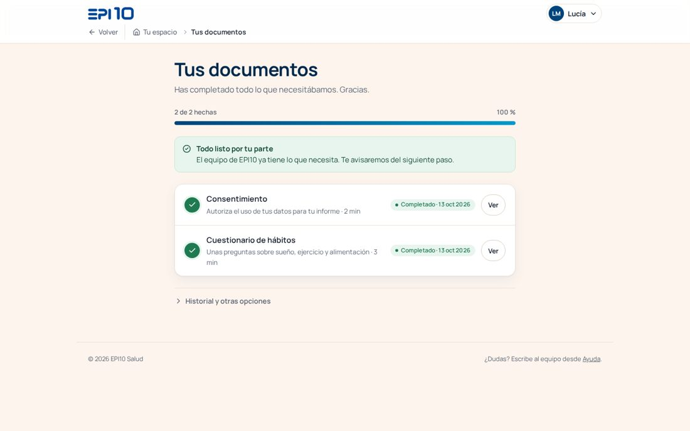
Estado de cada documento.
Igual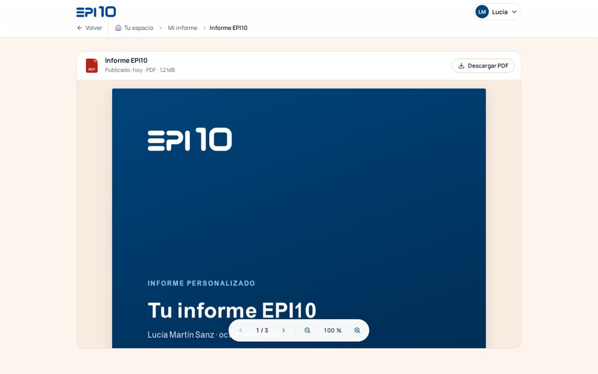
Se mantiene para el informe completo. Delante va el resumen visual.
Igual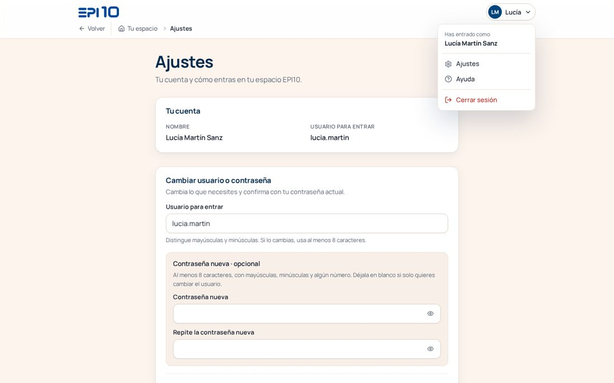
Se añade «Tus datos y permisos» (consentimiento de investigación).
Cambio menorCapturas de la propuesta del portal propio del 27 de octubre (clienta ficticia Lucía). Instancia de referencia: portal-propio.aporta-epi10.com.